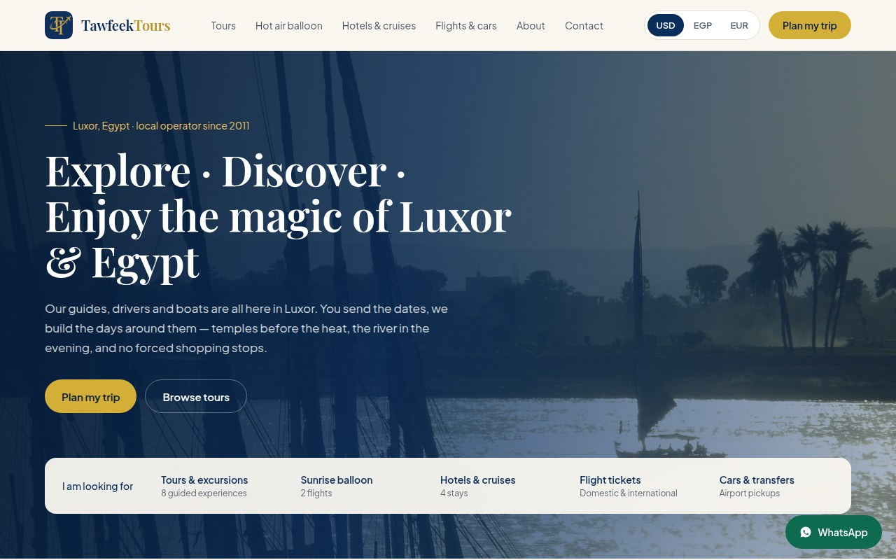
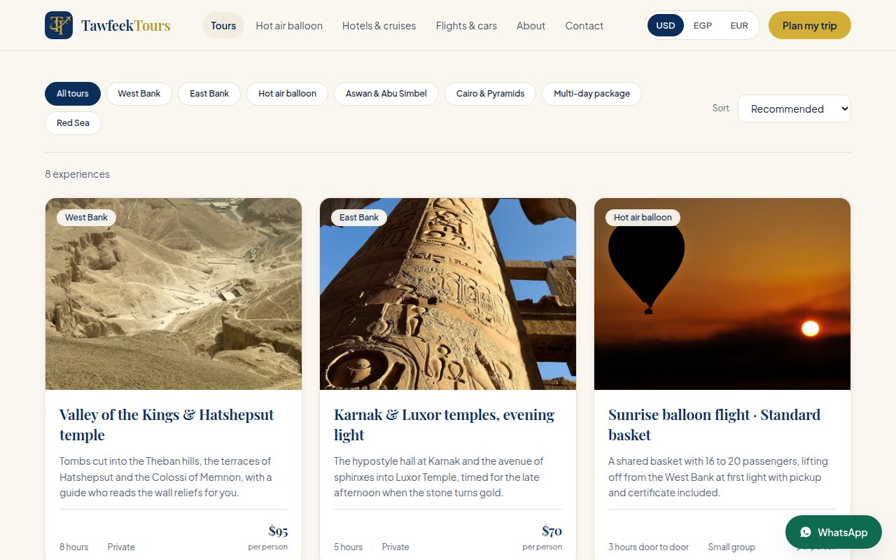
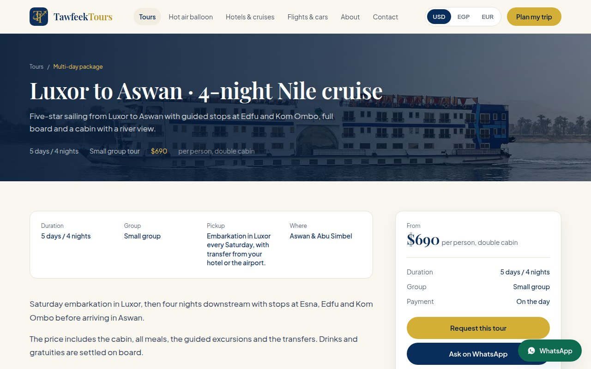
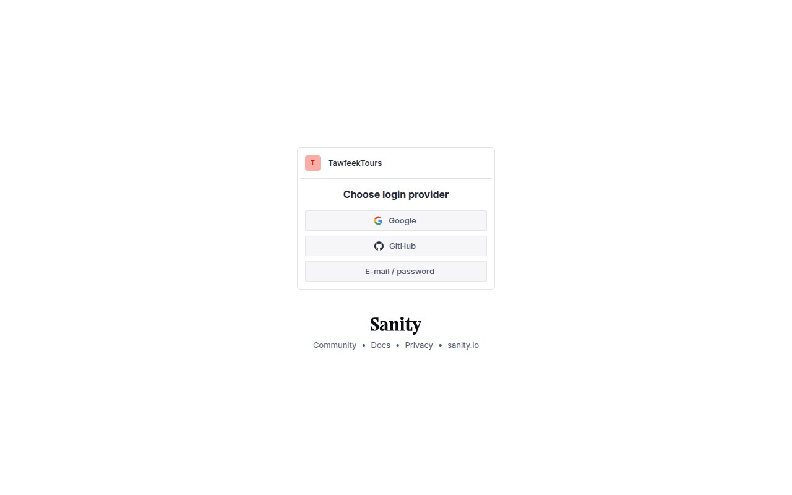

01منصة سياحية متكاملة ولوحة تحكم CMS / نظام إنتاجي حي
TAWFEEK
TOURS
منصة سياحية سريعة لإدارة الجولات، رحلات البالون، البواخر النيلية، الفنادق والطيران في الأقصر ومصر، مبنية بـ Astro مع لوحة تحكم كاملة عبر Sanity CMS. تدعم تسعير لحظي بـ 3 عملات (USD / EGP / EUR)، تصفية فورية للرحلات، وحجز مباشر وتدفق استفسارات عبر واتساب.
- Astro
- Sanity CMS
- TypeScript
- Tailwind
- Cloudflare




منصة حية / TAWFEEKTOURS.COM